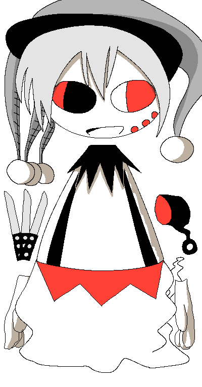

|

|

Phantobot
Introduced 31 May 2026
Phantobot's Associated Music:
Play Music"Phantobot's Theme: The Highest Throughput"
General Information:
Phantobot is a recurring character in Colormill. They are a sentient robot + ghost hybrid.
Personality:
Phantobot acts fairly neutrally. Contrary to their internal makeup that configures them to be dangerous, they do not typically fixate on wanting to hurt others, but will instead only do so when commanded.
Phantobot is only capable of getting along with new people when introduced through those considered familiar. They will otherwise act solemnly towards strangers.
Under special circumstances, Phantobot can become intense with a raw, unpredictable energy. They may be characterized by spontaneity, low tolerance for other people, and a tendency to move about in a disorderly fashion. In case of this, Phantobot would have to be internally reconstructed by Collie or Linnea.
Spawn Quirk:
Phantobot has the ability to spawn flexible magical hammers of different sizes. This is because of their nature as a half-robot/half-ghost, where the red and black design of the hammers represents their robotic nature, and the fluid qualities of the hammers represents their ghostly nature. Due to a present theme in their programming, Phantobot also has the ability to spawn objects that are typically associated with murder.
Occupation:
Phantobot serves under Collie as a punisher. When called, Phantobot will punish whoever Collie tells them to through differing levels of force. Collie can control the degree of how roughly Phantobot punishes someone. When executed under light settings, Phantobot will perform a stern, inescapable lecture to whoever is to be punished. When executed under harsh settings, Phantobot will incorporate dangerous tools into their punishment, such as knives and chainsaws, and proceed dangerously towards their target. Phantobot's nature as a punisher serves as a "last resort" option for Collie, and they are sparingly needed by him.
[Colormill Home]
Project Launched 11 February 2026